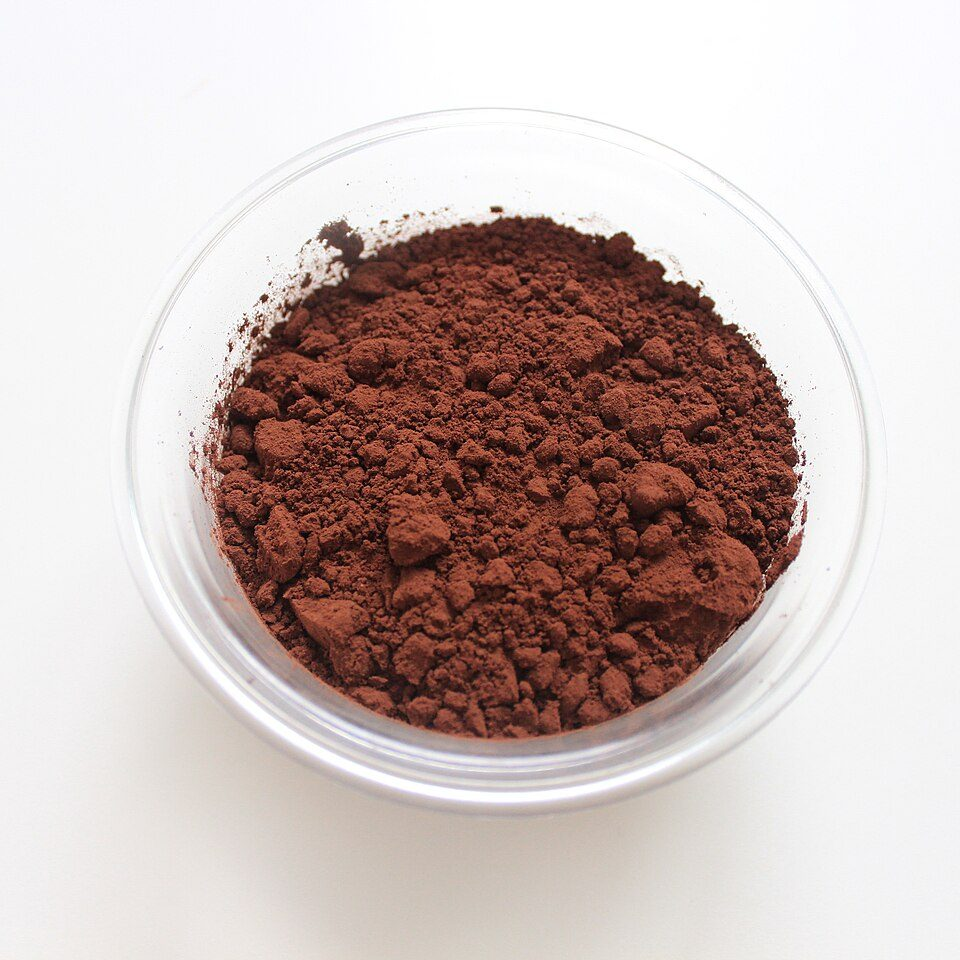
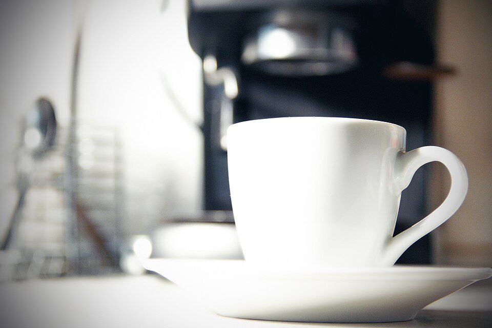

制作側の連想
スプレードライヤーの部位を、配置図にしてみる
このサイトは、液体を霧にして熱風で粉にする機械「スプレードライヤー」を図にしたつもりで作りました。六つの部位に番号をふり、上の図と並べています。制作側の連想で、お店の理念・由来とは無関係です。実際の装置の仕様や構造を正確に示すものでもありません。
凡例
六つの部位
- 1原液タンク噴霧する前の液体をためておく、供給側のタンク。
- 2噴霧ノズル液体を細かい霧にして、乾燥室の中へ吹き出す先端部。
- 3乾燥室霧が熱風に触れて、水分が抜けていく大きな筒状の空間。
- 4熱風入口加熱した空気を乾燥室へ送り込む、上部のダクト。
- 5サイクロン排気に混じった粉を、渦の流れで分けて落とす装置。
- 6回収容器乾燥室の底にたまった粉を受ける容器。
ギャラリー(イメージ)
パンとコーヒー豆の写真


写真はパンとコーヒー豆のイメージです。お店のものではなく、お店で提供している商品を示すものでもありません。
ご案内
お店のこと(確認できたものだけ)
| 所在地 | 〒837-0904 福岡県大牟田市吉野１０９４−１ |
|---|---|
| 電話 | 準備中 |
| 営業時間 | 準備中 |
| 定休日 | 準備中 |
| ご予約 | 準備中 |
| 駐車場 | 準備中 |
| SNS | Instagram @oomuta.hanipote |